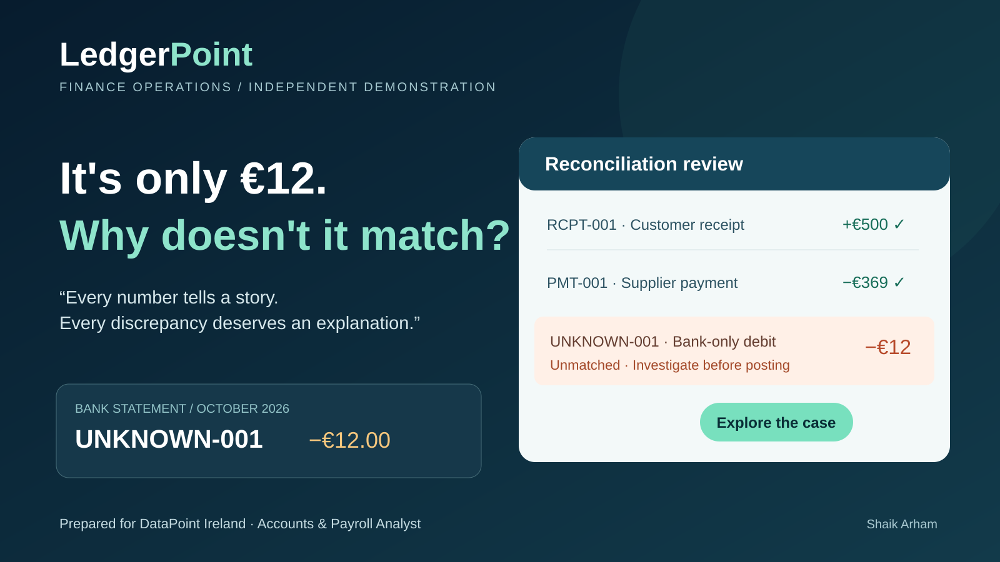

Understand the financial position
Start with €1,000 revenue, €300 expenses and €700 operating profit. Identify the outstanding receivable.
Open overview →
Independent application demonstration · Fictional financial data · Not endorsed by DataPoint Ireland
Every discrepancy deserves an explanation.
One unmatched €12 bank transaction. A practical demonstration of reconciliation, reporting and the judgement to investigate before posting.
A short, self-guided walkthrough of the finance-operations demonstration prepared for DataPoint Ireland.
You're reviewing fictional October 2026 financial records. The numbers reconcile except for an unexplained €12 bank debit. Follow the evidence, test a hypothesis and see why good reporting requires good judgement.
Start with €1,000 revenue, €300 expenses and €700 operating profit. Identify the outstanding receivable.
Open overview →Select the unmatched debit, inspect the evidence and preview what a bank-fee hypothesis would mean. Nothing gets posted.
Try the investigation lab →Compare matched receipts and supplier payments with the unidentified bank-only item.
Review bank records →Inspect the outstanding €730 customer balance, then see why profit and settlement cash are different.
Finish by meeting the applicant and seeing how this project connects to my BI and analytics background.
Meet the applicant →Everything uses fictional records. This is an independent application, not a DataPoint system or a live accounting platform.
A clear view of the fictional October 2026 operating position.
October 2026 · Net amounts
Profit is derived from revenue less expenses, not an additional cash inflow.
Unmatched statement transaction
Trade balances at 31 October 2026
A focused, read-only journey through reporting, reconciliation and evidence-led exception review using consistent fictional data.
Read the walkthrough →Select a transaction, test a possible explanation and see what the figures would mean. This is a fictional, local scenario. Nothing is posted.
Two matching statement items and one unresolved €12 debit.
| Reference | Direction | Amount | Status |
|---|---|---|---|
| RCPT-001 | Customer receipt | +€500.00 | Matched |
| PMT-001 | Supplier payment | −€369.00 | Matched |
| UNKNOWN-001 | Unclassified debit | −€12.00 | Unmatched |
Request bank evidence and investigate the €12 item before classifying or posting it. The unmatched statement item is not included in the net posted settlement figure.
Follow the review path ↗Illustrative sales and purchases, with payment allocation status.
| Invoice | Party | Type | Gross | Outstanding | Status |
|---|---|---|---|---|---|
| SALE-001 | Harbour Design Studio | Sales | €1,230 | €730 | Outstanding |
| BILL-001 | North Quay Supplies | Purchase | €369 | €0 | Settled |
Gross amounts include illustrative VAT; not tax advice.
Connect income-statement activity with posted settlement movements.
€500 of customer receipts less €369 of supplier payments produces €131 of net posted settlements. The €12 bank-only exception is excluded from the posted settlement calculation pending investigation.
A concise reviewer journey from anomaly to accountable next steps.
A €12 bank debit has no corresponding ledger posting.
Keep the unmatched item out of net posted settlement figures until its purpose is supported.
Identify an investigation owner and document the evidence needed before any posting decision.
Explain how a maker-checker review would separate preparation from approval; this case study does not simulate real authorisation.
Explore the finance operations case study here, including invoice records, reconciliation and financial reporting. The case study includes an interactive, local exception scenario.
Meet the applicant ↗A practical application for the Accounts & Payroll Analyst position in Dublin.
I'm a Dublin-based MSc Computing (Data Analytics) graduate with 2.5+ years of business intelligence experience at Hitachi Digital Services. My work has involved SQL, Oracle-based reporting, ETL monitoring, data validation and investigating operational discrepancies.
I created LedgerPoint independently to demonstrate how I would approach financial information: trace the source, reconcile the evidence, explain exceptions and report clearly. It is a fictional prototype, not a claim of professional payroll or accounting experience.
Hitachi Digital Services · Business Intelligence Developer
2.5+ years working with enterprise reporting, data checks, SQL and issue investigation. Experience turning complex records into reliable information for teams.
Dublin City University · MSc Computing (Data Analytics)
Further training in analytics, programming, data management and evidence-based problem solving.
Reconciliation: investigate differences before making assumptions.
Invoices and records: maintain traceability between source data and reports.
Reporting: make financial information clear and explainable.
Learning: build on my analytical background while developing accounting and payroll expertise.
My CV accompanies my application email. This website is a supporting demonstration of my approach, not a replacement for my CV.